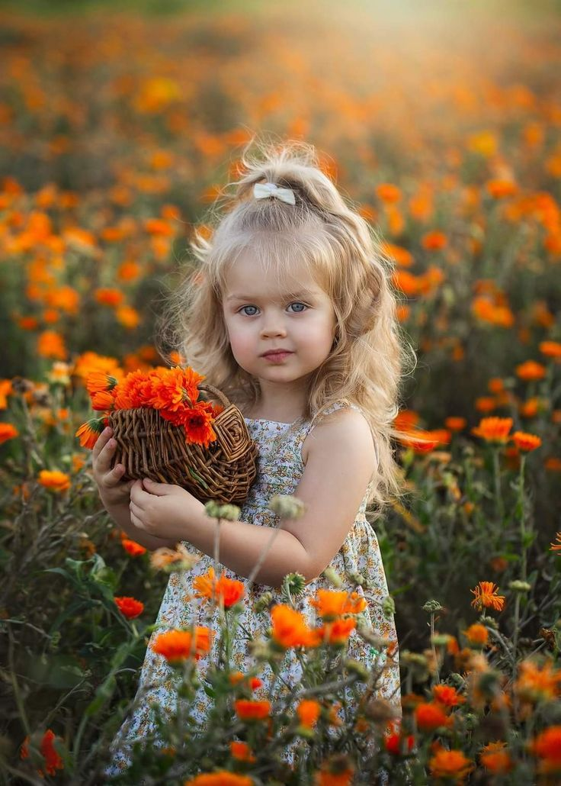
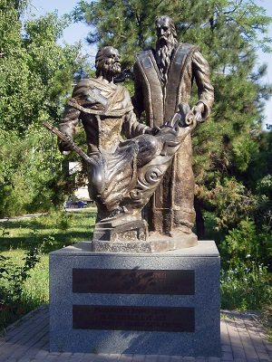

- Ім'я:Людмила
- Дата народження: 01.01.01
- Місце народження: Одеська область
Моя біографія!
Я народилася в Одеськой області, і вже з самого дитинства відчувала пристрасть до навчання та педагогіки. Мої батьки завжди підтримували мою цікавість до знань і навчали цінностям освіти та терпимості.
Після закінчення школи, я вступила до ОНУ ім. Мечнікова, де обрала філологічний акультет і отримала спеціальність "Вчитель за рубіжної літератури". Мої академічні досягнення завжди відзначалися високими оцінками та інтересом до педагогіки.
Після завершення навчання університеті,почала свою кар'єру в галузі освіти. Моя перша посада вчителя була в рідній школі, де я працюю і зараз. З часом, я набула багатий досвід роботи з учнями та здобула репутацію відданого вчителя, який завжди ставить освіту учнів на перше місце. Моя робота як вчителя завжди відзначалася інноваційними підходами до навчання, використанням сучасних методик та засобів, а також підтримкою розвитку критичного мислення та творчих здібностей моїх учнів. У мене завжди була глибока педагогічна майстерність та вміння відзначати потенціал кожного учня.Життя вчителя - це постійний процес навчання та самовдосконалення, і я була завжди готова до нових викликів і можливостей. Робота вчителем - це не просто професія, це життя.